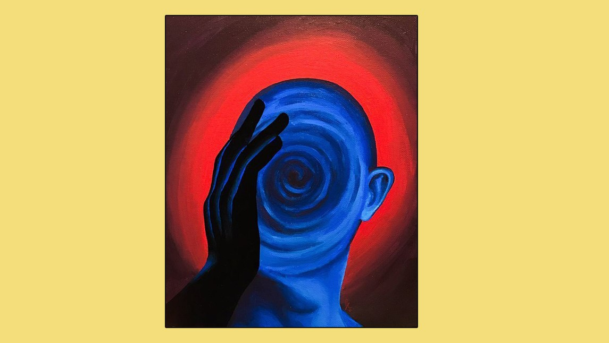

Estar presentes nos permite estar integrados, estar alineados con lo que verdaderamente somos, tener una visión más amplia y más consciente sobre nosotros mismos y el entorno. Nuestra mente tiende a saltar de un lado a otro, malgastando recursos, preocupándose por cosas fuera de nuestro control que generan pensamientos rumiantes, que van y vienen, como una vaca de 7 estómagos.
Para encontrar este foco, estar en el aquí y ahora es la forma, conectados con nuestra experiencia interna y, aprovechando el reflejo de esta que me ofrece lo externo.
El gran aprendizaje está en poder observarse. Poner el foco de la atención hacia adentro. En la escuela esto no siempre queda claro, ya que cuando el maestro o maestra nos dice “estén atentos”, normalmente no nos están enseñando cómo hacerlo. Incluso llegamos a disociarnos de lo que nos pasa, poniendo la atención afuera.
Porque, en realidad, en la auto observación, , la atención tiene que ver con una sensación física que la acompaña siempre, que nos recuerda la existencia de nuestro cuerpo, y por ende, de nuestro presente. Las emociones también quedan registradas en nuestro cuerpo a través de las sensaciones.
Tip para la concentración:
Cuando mi mente salta como un mono, traer mi atención al cuerpo físico y sus sensaciones me trae al presente.
Por ejemplo :
Llevo mi atención a mi dedo gordo del pie, hago un movimiento interno físico y puedo registrar la sensación asociada. A partir de estas sensaciones, puedo observarme y prestarme atención, y sentir como me siento?
Que es la concentración?
No es más que esta misma sensación de atención, mantenida durante un tiempo. Se puede entrenar por tanto. Con estos ejercicios, como poner atención a nuestros pies mientras caminamos, sentir la verticalidad de mi cuerpo… encorvado? Que me está pesando ? Así aprendemos a registrar nuestra atención a través de las sensaciones del cuerpo y observarnos… hacerle un lugar a lo que nos pasa y aceptarlo para integrarlo.
Asi, podemos ayudar a las personas a encontrar esa concentración, gracias a la comprensión de la auto observación. Sin embargo, muchos niños ya traen esto incorporado (in-corpore, dentro del cuerpo), y les desconectamos de sus sensaciones de atención a su propio ser exigiéndoles que “presten atención“, llena de tensión y los llevamos a una posición de defensa ante la vida, a armar un personaje alejado de su ser esencial, y esto hace que pierdan la naturalidad y transparencia propia que traemos de nacimiento.
Llenarlos de conocimientos estandarizados, también es una manera de desconectarlos, porque no damos espacio a que florezca la capacidad innata de cada uno , su potencial interno, los dones que vino a manifestar y sus propias capacidades a desarrollar.
Para ello, es necesario el autoconocimiento, la conexión con el presente y imprescindiblemente la auto observación que conlleva el respetarse a uno mismo y a los otros.
Estar en presencia plena es lo que nos permite actuar desde un lugar honesto con nosotros mismos, usar todas las herramientas que tenemos en conexión con nuestro interior, y así poder manifestarlas , y generar una gran influencia en el exterior.
Estamos aprendiendo todos juntos…
Nos acompañamos, porqué todos estamos en, unos a desaprender lo viejo y dar lugar a empezar a registrarnos desde el cuerpo…, y dejándonos volver a inspirar por los que acaban de llegar, y así, al mismo tiempo, podremos acompañarlos a manifestar lo que traen propio, sin desconectarlos de ellos mismos, por nuestro “amoroso afán” de enseñar.